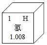
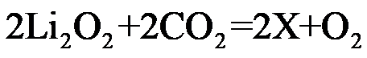
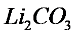
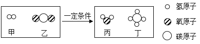
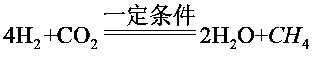
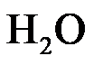
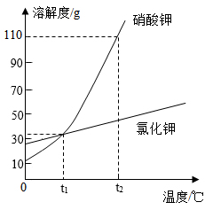

2022年北京市中考化学真题 · 选择题 第21、22、23、24、25题 · 对应解析
21. 下列火箭推进剂中，属于氧化物的是
A O2B. N2O4C. N2H4D. NH4ClO4
【答案】B
【解析】
【详解】A、O2是由氧元素组成的纯净物，由同种元素组成的纯净物叫单质，O2属于单质不属于氧化物，不符合题意；
B、氧化物由两种元素组成，其中一种元素是氧元素的化合物。N2O4是属于氧化物，符合题意；
C、氧化物由两种元素组成，其中一种元素是氧元素的化合物。N2H4中不含氧元素，不属于氧化物，不符合题意；
D、氧化物由两种元素组成，其中一种元素是氧元素的化合物。NH4ClO4是由四种元素组成，不属于氧化物，不符合题意。
故选：B。
22. 我国北斗导航卫星系统使用了星载氢原子钟。氢在元素周期表中的信息如下图。下列有关氢元素的说法不正确的是

A. 元素符号为HB. 原子序数为1
C. 相对原子质量为1.008gD. 原子中核外电子数为1
【答案】C
【解析】
【详解】A、根据元素周期表中的一格可知，右上角的字母表示元素符号，该元素的元素符号为H；故选项说法正确。
B、根据元素周期表中的一格可知，左上角的数字表示原子序数，该元素的原子序数为1；故选项说法正确。
C、根据元素周期表中的一格可知，汉字下面的数字表示相对原子质量，该元素的相对原子质量为1.008，相对原子质量单位是“1”，不是“克”，故选项说法错误。
D、根据元素周期表中的一格可知，左上角的数字表示原子序数，该元素的原子序数为1；根据原子中原子序数=核电荷数=质子数=核外电子数，则该元素的原子核外电子数为1，故选项说法正确。
故选C。
23. 载入航天器中处理CO2的一种方法为

，X的化学式为A. LiB. Li2OC. Li2CO3D. LiOH
【答案】C
【解析】
【详解】根据质量守恒定律反应前后原子的种类和个数不变，如题，反应前锂原子、氧原子、碳原子的个数分别是4、8、2，反应后锂原子、氧原子、碳原子的个数分别是0、2、0，则2X中含有4个锂原子、2个碳原子、6个氧原子，则X中含有2个锂原子、1个碳原子、3个氧原子，故化学式是

，故选：C。24. 载人航天器中处理CO2的另一种方法是将CO2与氢气反应，反应前后分子种类变化的微观示意图如下：

下列说法正确的是
A. 乙和丙的元素组成相同B. 丙的相对分子质量为16
C. 反应前后氧原子个数不相等D. 参加反应 甲和乙的分子个数比为4:1
甲和乙的分子个数比为4:1
【答案】D
【解析】
【分析】根据微观示意图可知该反应是乙即二氧化碳和甲即氢气在一定条件下反应生成水和甲烷，化学方程式为

，据此解题。【详解】A、如图所示，乙是由氧元素和碳元素组成的，丙是由氢元素和氧元素组成的，乙和丙元素组成不同，选项错误；
B、如图所示，丙是水（

），其相对分子质量是，选项错误；C、根据质量守恒定律，反应前后原子的种类和个数不变，反应前后氧原子个数相等，选项错误；
D、根据分析可知，参加反应的甲即氢气和乙即二氧化碳的分子个数比为，选项正确。
故选D。
【点睛】分析出化学方程式是解决此类试题的关键。
25. 下图是硝酸钾和氯化钾的溶解度曲线，下列说法不正确的是

A. 氯化钾的溶解度随温度的升高而增大
B. t1℃时，硝酸钾和氯化钾的溶解度相等
C. 将t1℃时的硝酸钾饱和溶液升温至t2℃，溶质质量不变
D. t2℃时，硝酸钾饱和溶液中溶质与溶剂的质量比为11:21
【答案】D
【解析】
【详解】A、由硝酸钾和氯化钾的溶解度曲线图可知，氯化钾的溶解度随温度的升高而增大，故A正确；
B、由硝酸钾和氯化钾的溶解度曲线图可知，t1℃时，硝酸钾和氯化钾的溶解度曲线相交，硝酸钾和氯化钾的溶解度相等，故B正确；
C、硝酸钾的溶解度随温度的升高而增大，将t1℃时的硝酸钾饱和溶液升温至t2℃，溶质质量不变，故C正确；
D、t2℃时，硝酸钾的溶解度为110g，硝酸钾饱和溶液中溶质与溶剂的质量比为，故D不正确。故选D。
第二部分
本部分共13题，共45分。
【生活现象解释】
从A、B两题中任选一个作答，若两题均作答，按A计分。